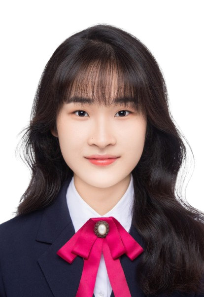

上海交通大学 · 行政管理
从公共事务、组织与社会出发，学习理解复杂问题。
GPA 4.16 / 4.3专业排名 1 / 18
A LITTLE CURIOUS. ALWAYS EXPLORING.
欢迎来到 Queenie 的这一片海。
你好，很高兴你游到了这里。
上海交通大学 · 行政管理
AI 产品创业者 · 内容创作者
对人和世界保持好奇，
在公共事务、产品与文字之间，寻找有意义的连接。

ME, IN PROGRESS.最近一学期专业排名
最近一学期学积分
撰稿单篇阅读量
公众号关注人数
把好奇，放进具体的事情里。
从学习、实践，到带着一群人做事。
每一片海，都留下了一点自己的坐标。
从公共事务、组织与社会出发，学习理解复杂问题。
换一个学科视角，也多一种理解世界的方式。
让知识走出纸面，变成可以亲手探索的东西。
宏观 + 微观十四大核心图，用交互推导呈现原理之间的关系。
打开经济学 HTML 作品 ↗负责产品运营，走进产品与用户的真实场景。
从课堂里的公共事务，走向实际工作。
2026 年创建上海潜意智能科技有限公司，开启 AI 社交产品创业。入选交大首届超级交子孵化器 AI Builder School。
体验 Venn 三端交互原型 ↗秘书处部长、公众号负责人。从零创建公众号，单学期主推 6 篇推文，参与招新面试与迎新大会核心策划。
担任总负责人，把一场相聚落到每一个细节。
这里留下一篇我真实撰写的公众号文章。撰稿曾获上海交通大学官方媒体公众号置顶推送。
阅读公众号原文 ↗